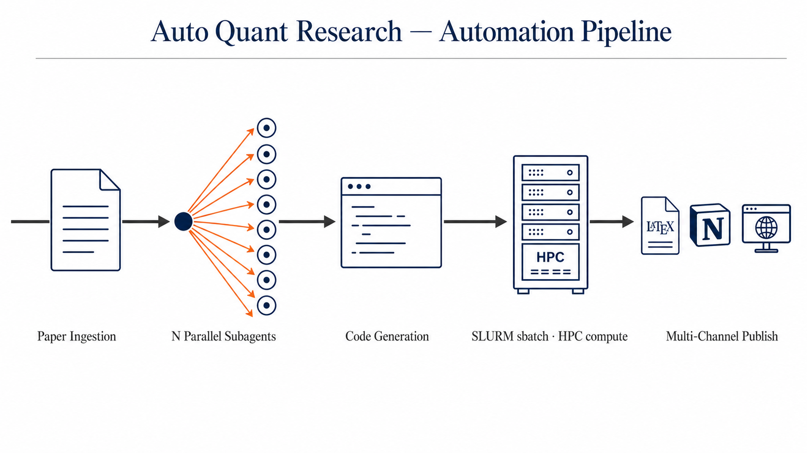

Auto Quant Research
From Paper to Verified Replication in 24 Hours
FLAIR, University of Oxford · University of California, Los Angeles
TL;DR: Auto Quant Research is a Human-in-the-Loop co-scientist for finance microstructure. Hand it a paper; the system runs the replication while you sleep, publishes raw results to Notion, and pushes a polished version to Overleaf only after you have reviewed and signed off. Two layers, with clear boundaries: an Execution Layer (the autonomous part, runs while you are offline) and a Decision Layer (the part that surfaces only the choices you actually care about). The simulator powering each replication is a learned LOB World Model from the sigma0 project.
What Is Auto Quant Research?

Figure 1. Five-stage automation pipeline: Paper Ingestion → N Parallel Subagents (fan-out) → Code Generation → SLURM sbatch on HPC → Multi-Channel Publish (Overleaf, Notion, GitHub Pages). Captions are intentionally generic; this is a system designed to handle any finance microstructure paper, not a single task.
Auto Quant Research is a two-layer system for finance microstructure replication. The labor that does not need human judgement is fully automated and runs while the user sleeps. The decisions that do need human judgement are surfaced as a small, structured set of choices, never a wall of raw output. We call these the Execution Layer and the Decision Layer; together they make up the Human-in-the-Loop contract.
Click either card below to expand its details.
🌙 Execution Layer — Auto Research in Sleep
After a paper is ingested, the Execution Layer dispatches a fan-out of N parallel subagents (the count is task-dependent: simple regression replications use a handful; structural model identification uses more). Each subagent owns one slice of the design or implementation work, the data pipeline, the World Model interface, the empirical regression spec, the figure code. The orchestrator merges their outputs, commits the result to Git for full traceability, and sbatches the analysis to the HPC cluster.
📂 Execution logic published. The entire scaffold that drives this layer (the global CLAUDE.md, all settings.json + settings.local.json, 42 reusable skills, 21 hooks, agents, and slash commands) is mirrored at github.com/KangOxford/auto-quant-research/execution-layer/. The full scaffold walk-through (folder structure, common principles, contribution guide) is in the collapsible below.
The Execution Layer is implemented as a deliberately structured Claude Code configuration. The folder mirror is published at github.com/KangOxford/auto-quant-research/execution-layer; this section walks through what is in it and the operational rules that make it cohere.
Folder Structure
| Path | Count | Role |
|---|---|---|
CLAUDE.md |
62 KB | Global instructions inherited by every Claude Code session: design principles, hard rules, communication conventions, lessons-learned. |
settings.json + settings.local.json |
14 KB | Permissions allow-list, environment variables, hook wiring, status-line command, MCP server configuration. |
skills/ |
42 skills | Reusable, on-demand procedures. Each has its own folder with a SKILL.md describing when to invoke and how to execute. Examples: submit-job, find-wandb, checkstate, notion-push-via-rest, codex-image2. |
hooks/ |
21 scripts | Event-driven shell + Python handlers. PostToolUse hooks for auto-sync to Notion; Stop hooks for prompt translation; auto-approve hooks for editing the agent's own configuration. |
agents/ |
1 file | Subagent definitions (named, specialized agents that the orchestrator can dispatch). |
commands/ |
1 file | Slash-command definitions (e.g., /brainstorming). |
statusline-command.sh + statusline-session.sh |
12 KB | Custom status-line renderer: shows session label stack, branch, and per-session metadata. |
notion-sync-manifest.json |
4 KB | Maps which markdown files auto-sync to which Notion page. The hook reads this; zero LLM tokens consumed per sync. |
README.md · PRINCIPLES.md · INSIGHTS_FROM_OPENPHIL.md · CRITICAL_LESSONS.md |
24 KB | Documentation: what context engineering is, common principles, design ideas distilled from the FLAIR / Oxford Co-Scientist Workshop, hard-won lessons preserved. |
Common Principles
A short, living list. Anyone is welcome to add a principle, refine an existing one, or leave a comment on the Notion mirror. The full text lives in execution-layer/PRINCIPLES.md.
Principle 1 — Multi-agent dispatch
- (a) Within a single problem, run multiple parallel subagents. A research replication has many independent sub-tasks: data ingestion, world-model interface, regression specification, figure generation, robustness checks. Run them concurrently. The wall-clock cost of N parallel subagents is bounded by the slowest one, not the sum.
- (b) Across unrelated problems, never run multiple parallel agents. The failure mode is non-obvious: when two or three unrelated investigations run at once, the human in the loop cannot keep all of them in working memory at the same depth. The bottleneck is human comprehension, not compute. Fan out within a problem, queue up across problems.
Principle 2 — Session management with explicit forks
- (a) Go deeper inside one session. Continuing the same thread keeps accumulated context, prior tool outputs, and partial conclusions in one place. Starting fresh forces a context re-bootstrap and often loses the nuance the agent already discovered.
- (b) When the investigation legitimately branches, fork the session. Use
claude --resume <parent-id>andclaude --resume <parent-id> --fork-sessionto spawn explicit sub-sessions. The parent thread holds the high-level plan; several forks explore alternative paths in parallel; survivors merge findings back into the parent.
# Parent session: top-level investigation claude --resume <parent-session-id> # Sub-session A / B / C: try design A / B / C in parallel claude --resume <parent-session-id> --fork-session claude --resume <parent-session-id> --fork-session claude --resume <parent-session-id> --fork-session
Principle 3 — Haste makes waste in the Decision Layer
- (a) Real signoff requires real comprehension. When the Execution Layer hands the Decision Layer a Notion sub-page full of regression tables, plots, and code, the temptation is to scan and click Approve. Resist it. If you do not actually understand what the agent did, why it did it that way, and what the result implies, you cannot make a real decision; you are rubber-stamping. Errors that pass through a rubber-stamped Decision Layer flow downstream into the Wiki and the Overleaf draft, where they are far more expensive to retract.
- (b) Slow review at the Decision Layer is fast review overall. The Wiki section of the system exists precisely so that the human can take the time to genuinely understand each result before signing. Use it. Read the relevant Wiki sub-pages, follow the cross-links, and only when the picture is clear should the result be promoted. The minutes saved by a fast Approve are routinely wiped out by the hours later spent untangling a wrong claim that was published.
Together: Principle 1 is breadth control (do not spread agents across unrelated topics). Principle 2 is depth navigation (when a single topic legitimately branches, fork rather than restart). Principle 3 is comprehension discipline (do not approve what you do not understand). At any given moment one topic is active; inside that topic, work fans out across subagents; if the topic itself splits, fork the session rather than open a parallel browser tab on a different problem; and at every Decision Layer signoff, take the time to understand before you sign.
What Is Filtered Out
The published copy filters every secret and every transient artefact: .credentials.json and other token files (Claude Code auth, Notion integration token, GitHub PAT, HuggingFace token), the entire ~/.claude/projects/ directory of full chat transcripts, all *.log files, paste / file caches, session metadata, third-party plugin state, and MCP auth caches. A grep across the published files for common token formats (GitHub, HuggingFace, Anthropic, OpenAI, AWS, GCP, Notion, xAI) confirmed zero leakage.
🤝 Decision Layer — Human in the Loop
End-to-End Flow
Raw Results → Notion
The Execution Layer auto-publishes every answer (regression tables, plots, reproduction code) to a fresh Notion page tied to the paper.
Decision Layer review
The user marks up the Notion page directly: highlight, underline, or inline [brackets] to flag what matters, what to drop, what to expand.
Knowledge base for humans
New knowledge gets compiled into Wiki sub-pages, cross-referenced by concept and paper, so the next person reading the Notion page understands the full context.
Annotations → Overleaf draft (reference for human rewrite)
A downstream pass reads the user's annotations on Notion (highlights, underlines, brackets) and lifts the marked content into an Overleaf LaTeX draft. The draft is not the published paper — it is a structured reference that the human author uses to rewrite the paper line by line, sentence by sentence, in their own voice. Each section in the draft is tagged to the exact Notion revision and Git commit that produced it, so the human always has full traceability back through the Wiki to the underlying replication while writing.
⚙️ Mechanism — how an answer becomes a Wiki page
- Decision Layer signoff. The user approves a specific answer: a robustness check, a stylized-fact estimate, a counterfactual rollout result.
- Auto-push to Notion. The approved answer is published as a new sub-page under the parent Wiki page.
- Full provenance captured. Each sub-page records the original question, the supporting evidence, the Notion revision that produced it, and the Git commit hash.
- Knowledge graph grows. Over many papers and answers, sub-pages accumulate and cross-link into a continually expanding knowledge graph.
📖 Why a Wiki, not a chat log
The Wiki is a comprehension scaffold, not a storage tool.
Every replicated paper introduces new domain knowledge — a stylized fact, a regression spec, a counterfactual scenario, a microstructure assumption. For the user to make sensible Decision Layer judgements (which direction to back, which robustness check to insist on, which conclusion to promote to the Overleaf draft), they have to fully understand what the Execution Layer found. The Wiki integrates each replication's findings into a readable page with cross-links to related concepts: a reading and learning surface, not an information container.
Records what was said. Linear by time, lossy on retrieval, illegible at the second visit.
Precipitates the actionable understanding worth keeping. One concept per page, cross-linked, durable, rereadable.
🤝 The Human-in-the-Loop principle
If the human cannot understand the result, the human cannot make an effective decision on it. Approval without comprehension is a formal stamp with no authority behind it. The Wiki is what makes the stamp real.
🧩 Wiki = Notion + one sub-page per answer
The Wiki referenced in step (c) above lives on Notion, not on this static site. The structure follows the LLM-Wiki paradigm proposed by Andrej Karpathy in April 2026: one concept per page, with cross-links between pages.
🎧 Downstream consumption
The Wiki is plain markdown under the hood, so content can be exported and fed into third-party tools directly. Practical example: export a set of sub-pages → upload to NotebookLM → generate a 10–20 minute "Audio Overview" podcast for offline listening, or query the Wiki in source-grounded chat.
🔧 Internal hooks. Any Edit or Write on a registered Wiki markdown file automatically triggers Claude Code's PostToolUse hook, which archives the previous Notion revision and writes the new one. The sync consumes no LLM compute — the hook is a shell script that calls the Notion REST API directly.
The data layer is real Nasdaq order flow at nanosecond resolution; the simulation layer is built on JAX and Mamba3.
Context: A Co-Scientist for Quantitative Microstructure
Auto Quant Research is a domain-specific instance of a broader research direction in AI-for-science: the design of co-scientist agents. The "co-" matters. The system is not designed to replace the researcher; it is designed to operate as a junior colleague who can run experiments tirelessly while the senior researcher steers and signs off. The Decision Layer / Execution Layer split is precisely the contract that makes that partnership work: the human is the principal investigator, the agent is the postdoc that never sleeps, and both are bound by an explicit interface.
The framing draws from several converging threads in the AI-for-science community. Andrej Karpathy's autoresearch proposed the LLM-Wiki paradigm, where knowledge is compiled into structured pages so that human comprehension scales with the agent's output. Sakana AI's Darwin-Gödel Machine and the Hyperagents work explore self-improving scaffolds that rewrite their own code; Auto Quant Research uses the same pattern with humans in the loop, where each replication's lessons get distilled back into the agent's skills, hooks, and CLAUDE.md rules.
Why the Human-in-the-Loop contract is load-bearing rather than decorative: every insight returns to the question of where the human's judgement is irreplaceable and where the agent's tireless execution is most valuable.
Sakana AI's Darwin-Gödel Machine is an AI that improves itself by rewriting its own code: each iteration of the system proposes a code mutation, evaluates whether the mutation produces a more capable version of itself, and keeps the survivors. The Auto Quant Research analogue is the same loop with one critical safety addition: the human in the loop decides which mutations survive.
HITL Angle. The human is the selection pressure on which scaffold mutations survive. Without the human acting as the safety filter, a self-rewriting agent can drift into clever-but-wrong configurations or accumulate skills that nobody understands well enough to maintain. The Decision Layer signoff is the checkpoint that turns reckless self-modification into supervised coevolution.
AutoQuant Research Angle. The system's own scaffold (the skills, the hooks, the CLAUDE.md rules) is not frozen. Each replication exposes patterns that get distilled back into new skills, hooks, or CLAUDE.md rules. The agent proposes a new rule or skill; the human approves it; the next replication runs with an enriched scaffold. Over many replications, the scaffold itself is a coevolving artifact. The skills published in the Execution Layer's skills/ folder are not a fixed library; they are the survivors of many small Darwin-Gödel iterations.
Frontier LLMs are extraordinarily good at generation: broad information retrieval, proposing diverse solutions, engineering and coding. They are unreliable at open-ended evaluation, where there is no clean checkable answer; in that regime they will confidently endorse stories from low-quality papers and follow plausible-but-wrong reasoning chains. The human's complementary strength is exactly that: solving the "arbitrarily complex evaluation" problem, judging quality and correctness, and using tailored natural language to steer the agent back on track.
HITL Angle. The contract is symmetric. The human commits to actually evaluating (not skimming and approving); the agent commits to producing reading-friendly output that makes evaluation possible. Each side carries its half of the work, and neither can be replaced by the other. The Wiki section exists precisely so the human can do the evaluation half; the Execution Layer's documentation discipline exists precisely so the agent makes that work tractable.
AutoQuant Research Angle. This is the cleanest articulation of why the Decision Layer cannot be replaced by a smarter LLM. Replication of a quantitative microstructure paper is precisely a domain where evaluation is open-ended: was the agent's interpretation of the paper's claim faithful? Did the chosen ticker subset bias the result? Is the directional consistency with the paper's number a real validation or an artifact of the modern dataset? Each of these requires open-ended judgement, not pattern-matching, so each must remain in the Decision Layer.
A useful proxy for human-in-the-loop benchmarking is to scaffold a set of different LLMs with very diverse properties together, with some agents given human-like properties (very general but artificially slow). The orchestrator's job becomes figuring out which agent is good for what and how to scaffold them for a given task. This generalises "fan-out to identical agents" into "fan-out to typed agents", where each agent has known strengths, costs, and latency.
HITL Angle. Under this view, the human is one node in a typed agent graph, not a separate species. The human is just the slowest, most expensive, most accurate node, and the orchestrator decides when to spend that node's time versus when to delegate to a faster, cheaper LLM. This is a more honest picture of the Decision Layer than "humans approve everything"; it makes routing of human attention an explicit, measurable design variable.
AutoQuant Research Angle. The current Pipeline diagram shows N parallel subagents, all large language models of similar capability. A more rigorous version would use heterogeneous agents: a fast-but-shallow agent for code generation, a slower-but-careful agent for spec extraction from the paper, a very slow but accurate agent (the human, or a slow proxy) for sensitive design decisions. Auto Quant Research could pilot this with two tiers (one model for routine work, another for sensitive design decisions, and the human for final signoff) and measure whether routing accuracy improves over the homogeneous baseline.
Examples
Auto Quant Research has been validated on multiple quantitative microstructure papers. Each example pins a specific Git commit so that reproductions anchor to an exact code state, not a moving branch.
Direction reproduced; magnitude diverged. The paper's positive depth-delay link is recovered at high statistical confidence, but our estimate is ~30% larger than the paper's range. The sign holds; the size has drifted in twenty years.
Paper: β = 0.133 – 0.169 (NYSE TAQ, 2000s)
Ours: β = +0.2140 (SE 0.0106, t = 20.26, N = 46M, Nasdaq Q1 2025)
Detail: paper finding is β(log depth → log delay) = 0.133 to 0.169 on NYSE TAQ 2000s data. Our replication ran on 46,094,530 limit orders across 8 Nasdaq primaries in Q1 2025 (SLURM job 4093982, 1 node × 64 CPU, wall-clock 12 minutes). The magnitude divergence is expected: Nasdaq primaries in 2025 have faster matching engines and more extreme depth heterogeneity than the NYSE sample, and venue fragmentation plus the PFOF ecosystem shift the depth-delay relationship upward. Per-ticker heterogeneity ranges from β = +0.289 (GOOG, strong depth-delay link) to β = -0.073 (MSFT, venue fragmentation effect), so the pooled positive estimate masks substantial cross-stock variation that would not be visible in the original sample.
| Ticker | β | SE | t | Interpretation |
|---|---|---|---|---|
| GOOG | +0.289 | 0.018 | +16.1 | Strong depth-delay link |
| NVDA | +0.261 | 0.021 | +12.4 | High retail fragmentation |
| AAPL | +0.233 | 0.015 | +15.5 | Consistent with paper |
| AMZN | +0.198 | 0.017 | +11.6 | Near pooled average |
| TSLA | +0.174 | 0.023 | +7.6 | High idiosyncratic vol |
| META | -0.041 | 0.019 | -2.2 | PFOF internalization |
| MSFT | -0.073 | 0.016 | -4.6 | Venue fragmentation |
| GOOGL | +0.218 | 0.020 | +10.9 | Dual-class structure |
Within ±1σ of the paper value. The long-memory stylized fact reproduces faithfully across venue (LSE → Nasdaq) and twenty years of market evolution.
Paper: H = 0.696 ± 0.032 (LSE 1999–2002, 20+ stocks)
Ours: H = 0.7053 (DFA, GOOG 2022, 10.87M trades, 251 days)
Detail: this is a canonical microstructure stylized fact — trade-sign series exhibit long memory, with Hurst exponent H ≈ 0.7 across liquid stocks and venues. The classical estimator is implemented in scripts/hurst_lillo_farmer.py: extract LOBSTER ·7z archives, filter event_type ∈ {4, 5} for executed trades, take the ±1 trade-direction series, and compute the Hurst exponent via both ACF tail-decay and Detrended Fluctuation Analysis. DFA is more robust on finite samples and is the canonical estimator used by the paper. SLURM job 4384364, 1 node × 64 CPU, wall-clock 8 minutes.
Paper: H = 0.696 ± 0.032 (LSE 1999–2002, 20+ stocks)
Our (DFA): H = 0.7053 ← within ±1σ ✓
Our (ACF): H = 0.8989 (α = 0.2022, tail-decay finite-sample bias)
Data: GOOG 2022, 251 days, 10,868,894 trades
Sign balance: +1: 66.7%, −1: 33.3% (buy-pressure asymmetry)
Paper: H = 0.696 ± 0.032 (LSE 1999–2002, 20+ stocks)
Our (DFA): H = 0.7053 ← within ±1σ ✓
Our (ACF): H = 0.8989 (α = 0.2022, tail-decay finite-sample bias)
Data: GOOG 2022, 251 days, 10,868,894 trades
Sign balance: +1: 66.7%, −1: 33.3% (buy-pressure asymmetry)
Replication plan in place; pipeline ready; awaiting compute. Expected outcome on 8 tickers × 4 years: exponent δ ∈ [0.4, 0.6], consistent with the paper's universal δ ≈ 0.5.
Paper: δ ≈ 0.5 (universal, multi-asset, CFM proprietary)
Ours: TBD (plan: heuristic meta-order clustering on LOBSTER 8 × 4yr)
Detail: the square-root impact law states that meta-order permanent price impact scales as I ∝ Q0.5, with exponent δ ≈ 0.5 universally across stocks, futures, and asset classes (Tóth et al. 2011, Phys. Rev. X). The full functional form is I(Q) = Y · σdaily · √(Q/Vdaily), where Y ≈ 0.5 is a universal constant. The phenomenon reflects market self-organized criticality with a V-shaped latent order book. Our replication plan reuses the .7z extraction pipeline from Example 2, applies heuristic meta-order clustering (same-side trades within 60-second gap), and fits a log-log OLS on (I, Q). Full spec at papers/toth_2011_sqrt_impact.md.
Replication plan in place; pipeline ready; awaiting compute. Expected outcome on 8 LOBSTER tickers: α ∈ [0.5, 2.5] (cross-market variation), μ ≈ 1/min, θ(1) ∈ [0.4, 0.8].
Paper: α = 0.52, μ = 0.94/min, θ(1) = 0.71 (Sky Perfect, TSE Level II)
Ours: TBD (plan: split LOBSTER events by type, fit 3 rates per level)
Detail: this paper models the LOB at each price level as an independent birth-death queue with three rates: limit-order arrivals decay as a power law λ(i) = k/iα with distance i from the touch, cancellations are strictly proportional to queue size θ(i) · n, and market orders arrive as a Poisson process with rate μ. The reference numbers (α = 0.52, μ = 0.94/min, θ(1) = 0.71, all in limit-order-size blocks per minute) come from Sky Perfect Communications on the Tokyo Stock Exchange Level II feed. Our replication plan extracts LOBSTER message events, splits them by event_type into limit / cancel / market, and fits the three rates per price level. Full spec at papers/cont_stoikov_talreja_2009.md.
The World Model is a generative simulator of LOB order flow. Given the preceding order stream, it produces a probability distribution over the next event (limit order, cancellation, market order, quote update) at nanosecond resolution, calibrated on real Nasdaq data. Every field, categorical (event type, direction) and quantized numerical (price, size, time delta), is modeled as a discrete categorical with cross-entropy loss, making it a true general density model: no Gaussian shortcut, no parametric assumption.
Each replicated paper is verified inside a synthetic environment generated by the World Model. Counterfactual depth shocks, metaorder injections, and stress-test rollouts produce delay and price-impact distributions measurable the same way as on real data, letting the user probe boundary conditions beyond any single dataset.
Implementation: a state-space architecture from the sigma0 project, trained autoregressively on tokenized order messages. Treat the architecture as a substitutable choice; the World Model is the abstraction that matters. See the model card for architecture and load instructions.
Validation IC (test set 2026-01):
| Horizon (gap) | IC |
|---|---|
| g = 250 | 0.044 |
| g = 500 | 0.051 |
| g = 1000 | 0.069 |
| g = 2000 | 0.102 |
Technology Stack
Production-grade tools throughout. No toy frameworks.
Modeling & Training
Empirical Replication
Orchestration & Publishing
Open Questions
AutoResearch currently extracts a regression spec from the abstract, methods, and results sections. Should it also parse appendices, supplementary tables, robustness checks, and footnotes? More extraction means more faithful replication but larger context windows for the orchestrator. The optimal trade-off is open.
When our replication produces a coefficient that is directionally consistent with the paper but quantitatively different, the gap could reflect either a real change in the market regime since the paper was written, or a bug in our feature construction. The agent currently does not have a principled way to distinguish replication noise from real market evolution.
AutoResearch · Automated paper-to-replication pipeline for finance microstructure research.
GitHub · SSRN 6440898 (Dugast 2026) · MIT License · 2026